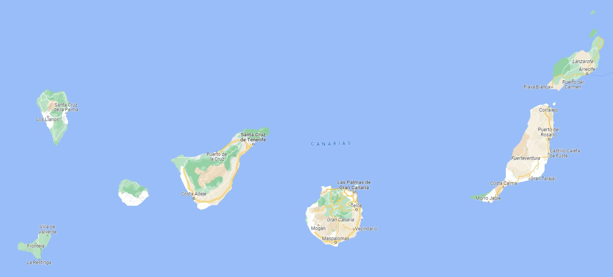
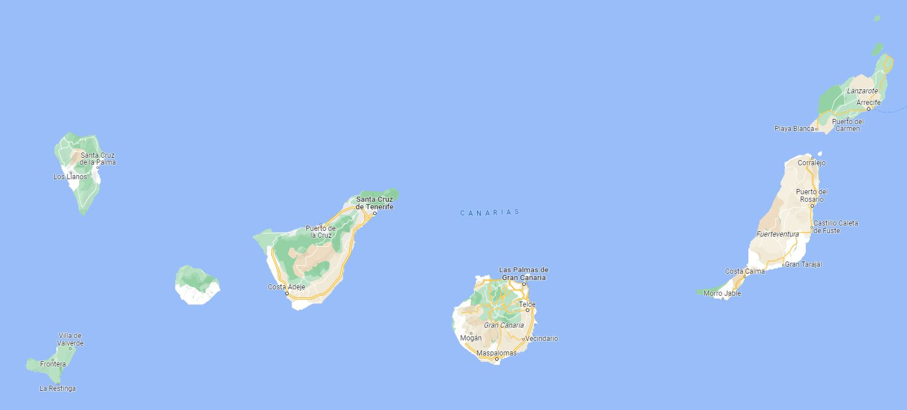

2000
I was born in Gran Canaria, Canary Islands. This influenced my entire childhood, shaping it with values of family, unity and closeness.

I was born in Gran Canaria, Canary Islands. This influenced my entire childhood, shaping it with values of family, unity and closeness.
I was always a curious child, who didn't like to stick to one thing, but rather tried everything. When growing up, my life sustained upon these three pilars:

I was fascinated by books, so I devoured them. From "Harry Potter", "The Lord of Rings" and many more youth-fantasy-novels, to "The Adventures of Tintin" and "Asterix & Obelix". While reading I lost track of time, seeing myself in those amazing adventures.

I started playing chess when I was 6, quite a young age. I strongly believe it has helped me develop my logical thinking. Anticipation and evaluating different possible alternatives are basic in chess, which you can use in any area of your life.

My journey with sports started here, but it has been with me all my life. I could list all the sports I have tried, but at that time I was most focused on tennis and swimming.
I finished the mandatory part of my education. I opted of Technological Bachillerato, and at the same time I started my first jobs in summer camps and teaching private lessons. This helped me to assume responsabilies and getting used to a more formal environment.
When turning 18, a had to make a big decision in my life: what to study at University. I got the perfect mix when combining the calculus and logic from Computer Science with management and customer relations from Business (among other unmentioned skills).
Teamwork
Leadership
Adaptability
Communication
Problem-solving
Innovation
Attetion to detail
Continuous learning
Experiencing an ERASMUS+ whole year felt life-changing. It was a leap into the void, where everyday I faced new challenges. From living abroad independently, to self-learning in many different ways (academic courses, languages...), to meeting new people from all around the globe. Living in Warsaw put me in the very centre of Europe and I was able to use all my free time to get to know new countries and cultures.
+ Independance
+ Team working
+ English
+ Social skills
Great that you made this far! I'me sure you know me a bit better now. Do not hesitate to download my resume and feel free to contact me on any of the platforms below.